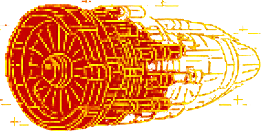

ERROR! Turbine 1 linked list broken.
Reconnect HEAD, nodes, and TAIL.
Reconnect HEAD, nodes, and TAIL.

Required Linked List:
HEAD -> L1 -> L2 -> L3 -> L4 -> L5 -> TAIL
Tip: The list head must start at L1, every node must point to the
next node, and the tail must end at L5.
Linked List Nodes Drag to Rearrange:
System waiting for linked list diagnostics...
Console ready.